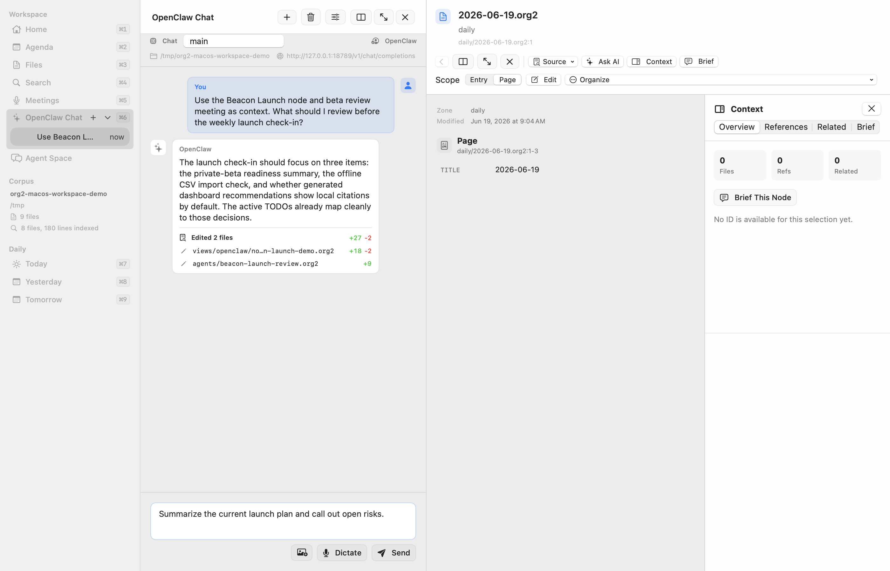

macOS Workspace
Org2 Workspace is the native macOS client for working with an Org2 corpus. It is an alpha app in apps/macos/Org2Workspace, built as a Swift Package, and uses the same parser/CLI output as the rest of Org2 instead of maintaining a private database.
The app is currently best understood as a local workspace shell for dogfooding the product direction: global capture, durable run and approval review, agenda review, file and knowledge navigation, search, compiler-generated HTML reading, native source editing, meeting capture, data notebooks, OpenClaw handoff, knowledge-node creation, and crypt workflows over normal files.
On first launch, a guided empty state offers Open an existing corpus, Create a new corpus, or Create a shared team corpus. Opening accepts an existing folder of Org/Org2 files without migration. Creating asks for an empty folder, writes a portable personal or shared identity in org2.json plus an inbox and welcome note, creates notes/, daily/, views/, compiled/, and workflows/, then opens the welcome note. It refuses to initialize a non-empty folder so existing files are never silently overwritten.
Screenshots
These screenshots are captured from the synthetic corpus in examples/macos-workspace-demo so public docs never depend on private notes.





Current surfaces
The sidebar exposes the main workspace surfaces. Files pinned from the Files list or an open document's File menu appear in a personal, per-corpus Pinned section for quick return without changing the corpus itself.
The Corpora section remembers mounted local paths and switches among them. The active corpus's portable name, ID, and personal/shared/project kind remain visible. Switching is blocked while an edit or refresh is active, resets corpus-specific UI state, and refreshes all views from the destination. Agenda and text Search have This Corpus and All Corpora read scopes; combined rows show their corpus and activate it before opening. Writes and agent context remain scoped to the active corpus. Remote OpenClaw path mappings are stored per corpus so a switch cannot reuse another corpus's remote root. See Shared corpora and collaboration.
Agenda :: review scheduled/deadline work across the active corpus or all mounted corpora, filter items, switch agenda modes, mutate active-corpus TODO/planning state, and open the selected item in the detail pane.
Runs & Review :: use the Run Center to see active, completed, blocked, failed, and approval-needed durable agent runs. Search filters the selected run scope across goals, workflow and owner metadata, context, plans, outputs, approvals, validation, comments, and outcomes; the Review Queue has the same quick search pattern for pending approvals, and
Command-Ffocuses the search field on the visible tab. While the app is active, it silently refreshes durable runs, workflows, and the Review Queue once per minute and refreshes them immediately when the app returns to the foreground. Needs attention is an actionable projection rather than an append-only crash log: queued and running work stays in Active even when its durable record retains warnings or review metadata for a later boundary; completed and cancelled runs likewise stay out of the scope; repeated failed executions of the same goal collapse to the latest attempt; and a newer running, completed, or cancelled execution removes the older failures from that scope. All retains every durable record. Resume reactivates a blocked run, Dismiss keeps a failed record while marking it cancelled, and Mark Done Elsewhere… completes a blocked run only after the user records where or how its outcome was achieved outside the workflow; that third path retains pending approvals and unreviewed artifacts as historical evidence. Meeting-derived runs are grouped by their explicit source-meeting context, while every outcome keeps its own human-readable goal and status; the run detail links back to the meeting and between related outcomes. The run list uses the workspace's standard detail pane instead of creating a nested third column; selecting an output replaces the run detail with that file, and Back returns to the run. A completed run leads with its plain-language outcome, highlights, next actions, and readable output names; retained warnings and review metadata remain visible in its detail, while the plan, citations, routine validation, risk, and machine metadata are collapsed under Technical details. Skipped steps are labeled separately instead of counted as completed, and repeated validation attempts collapse to the latest result. Runs created from an existing workflow show that provenance and do not offer a duplicate Save as Workflow action; a completed one-off run may be turned into a draft workflow through the explicitly described Create Reusable Workflow… confirmation. The Workflows tab lists the canonical files underworkflows/, opens them in the normal document/source editor, collects inputs for Run Now, validates them, manages draft/active/paused state, and reconciles schedules with OpenClaw. The Review Queue tab retains the parser-backed headline approval workflow and OpenClaw discussion path. Rejecting a headline approval requires an audit reason; submitting the dialog without one keeps it open with a visible validation message.Files :: scan
.org2,.org, and Markdown files, filter them, and quick-open a file with keyboard shortcuts.Search :: run literal, case-insensitive full-text search across
.org2and.orgfiles under the active corpus or all mounted corpora, then open corpus-qualified results with source context.Meetings :: record or import local audio, create meeting/transcript artifacts under the corpus, and keep transcription provenance in Org2 files.
OpenClaw Chat :: send selected workspace context through the OpenClaw Gateway while keeping the conversation state local to the app. Gateway protocol v4 provides streamed replies, connection/run state, tool and lifecycle activity, optional provider-exposed reasoning, and a Stop action; the OpenAI-compatible HTTP endpoint remains a compatibility fallback when the WebSocket protocol is unavailable.
Global capture is available while the app is running. Cmd-Ctrl-Return opens a capture modal from anywhere on macOS, and the in-app Capture command uses the same path. Captures append to today's daily note, using roam.dailiesDir from org2.json when configured. The modal can write notes or TODOs, set TODO state, priority, tags, scheduled/deadline dates, and mark a capture ready for agent handoff. The paste control accepts text, URLs, local files, and pasted image data; local files and images are copied into attachments/ and linked from the capture.
The detail pane can render a selected file, agenda item, approval item, search result, backlink, meeting note, or agent thread. Read mode uses compiler-generated HTML; the Edit command opens the same entry or page in a native source editor.
Document editing
The writing surface is a native NSTextView over the selected Org2 entry or full page. It keeps normal macOS cursor movement, selection, IME, undo, and save behavior while layering Org2 commands over the visible text buffer.
Current source-editor affordances include:
incremental syntax highlighting that remains responsive on large files,
native macOS spelling and grammar checking for prose without automatic source-text correction,
parser-backed source ranges, heading navigation, folding, semantic region presentation, and inline diagnostics,
a semantic heading gutter with fold, TODO, priority, planning, reference, property, and structural actions,
Return continuation for unordered, ordered, checkbox, and indented list lines,
heading and list insertion, promotion and demotion, TODO cycling, scheduling, deadlines, property insertion, link insertion, and planning cleanup,
presentation-only heading folding that never changes the source text,
Command-S saving that keeps the editor open and refuses stale writes without discarding the draft.
Read mode is deliberately separate. It renders the selected entry or page as HTML from the shared compiler, including headings, links, property drawers, quotes, tables, citations, media, source blocks, and generated Org2 artifacts. Rendered content is used for reading, navigation, and workflow actions, not as an authoritative editable DOM.
For legacy or pasted text containing tab-indented structural lines, read mode expands tabs in its rendering input and leaves the source file untouched. The canonical parser and editor diagnostics remain strict, so the source editor can still offer explicit tab cleanup without making preview availability depend on that cleanup.
Source editing can optionally show that HTML renderer in a resizable split view. The preview updates after a short idle delay, follows the source line near the caret, rejects stale render results, and can be paused. Typing never waits for HTML generation.
Document presentation is customizable without enabling document scripts. Use the document-layout menu to create or edit .org2/app.css at the corpus root; its CSS applies to read mode and the source preview. The app continues to exclude HTML_HEAD scripts and raw export HTML from its safe rendering profile.
Data notebooks and charts
Files containing ```dataset and ```sql results...= blocks act as explicit data notebooks. The rendered view can refresh a selected result through the shared org2 query-data backend, write the provenance-stamped materialized table back to the ordinary source file, and then render attached chart blocks. Merely opening or rendering a note never contacts a remote warehouse.
The current app workflow supports local/table datasets plus configured ClickHouse and Metabase profiles. For the Scarf Metabase workflow, the app stores the API key in the macOS Keychain, stores only non-secret profile configuration in org2.json, distinguishes configuration/authentication/query failures, and offers an explicit retry path. Native SQL datasets can identify the configured Metabase database without depending on a mutable saved question.
Interactive line, bar, and histogram charts remain compiler-described and app-presented: source controls deterministic size/height/sort settings, while the app provides nearest-point hover, exact-value tooltips, keyboard mark navigation, and resizable cards. Notes cannot inject arbitrary JavaScript, and static SVG remains the CLI/export fallback.
This is one place where the Mac app can take the Org tradition substantially further. Org tables, result blocks, and chart declarations remain readable and versionable as source, while the HTML-backed reading surface has room for dense layouts and interactions that would be awkward in a terminal-style buffer.
The app writes ordinary Org2 text. Users can inspect every change in Git or another editor.
Meetings
Org2 Workspace records meetings as local corpus artifacts. A meeting write normally creates an audio file, a meeting note, and a transcript artifact under meetings/.
Transcription is local-first. The app tries a configured ORG2_WORKSPACE_WHISPER_COMMAND, then common whisper.cpp commands, then the OpenAI Whisper CLI. If no local transcriber is available, it still writes the meeting artifacts with :transcription_status: unavailable rather than uploading private audio.
See Org2 meetings for the artifact shape and transcriber resolution order.
OpenClaw and agents
OpenClaw is the first fully wired agent runtime for the Mac app. That is the current implementation boundary rather than a permanent restriction: durable run files, workflows, approvals, context packs, CLI commands, and MCP interfaces are shared runtime surfaces that other agents can use.
The app includes OpenClaw chat for sending messages with current workspace context. It prefers OpenClaw Gateway protocol v4 over a native WebSocket connection and uses the configured bearer token for the Gateway handshake. The accepted run ID, connection state, streamed reply, provider-exposed progress, and structured tool events appear together in the in-progress transcript card. Repeated low-information tool events are grouped into readable summaries instead of exposing rows of raw completion JSON. The work log is saved with the assistant reply, stays compact by default, and can be expanded to scroll through the full retained feed. The Stop control sends chat.abort for the accepted run. If the Gateway WebSocket cannot be reached or negotiated, that turn falls back to the existing OpenAI-compatible HTTP endpoint and clearly labels the reduced-observability mode.
The repository also ships the native org2-lifecycle plugin under integrations/openclaw/. It records substantial OpenClaw main-agent turns, subagent executions, and cron work in the same durable run model shown by Runs & Review. It also prepares manual workflow runs before execution and reconciles enabled schedules from canonical workflow files into OpenClaw cron. See Getting started for the install path and Workflows for the ownership boundary.
Remote Gateways normally require a paired device identity before granting operator.read and operator.write. Save & Request Pairing in OpenClaw configuration creates a stable Ed25519 device identity in the macOS keychain and opens a Gateway pairing request. Approve the displayed request ID on the Gateway host; the next request can then use the live protocol. Until approval, normal chat continues over the HTTP compatibility endpoint without replaying an already-accepted Gateway run.
The progress feed only shows reasoning content that OpenClaw and the selected provider intentionally expose. It is not a promise of private or hidden chain-of-thought data, and it remains absent when the provider or Gateway does not emit a reasoning stream.
The chat composer sends with Return and inserts a newline with Cmd-Return. Adding a page, entry, headline, or rendered block as explicit context places a human-readable pill above the draft; multiple context items can be attached to one message, while stable file and line references remain in the agent-facing prompt instead of cluttering the conversation with opaque identifiers. Pills resolve legacy opaque references to the page title, abbreviate long labels until hover, expand with a short animation, and open the cited source line when clicked. Draft pills reveal a remove control on hover; sent messages retain linked, non-editable pills as an accurate record of the context the agent received. Transcript text can be selected continuously across multiple messages, and each message has a subtle hover-revealed copy control for copying that message alone. The Dictate control records a short local microphone note, transcribes it with the same local Whisper resolution path used by meeting capture, and sends the transcript as a normal OpenClaw message.
Typing / opens a discoverable command menu. Use the Up and Down arrow keys to move through its suggestions and press Tab to complete the highlighted command; clicking a command still completes it directly. Commands that only need compiler or app state run locally and leave their result in the chat transcript; commands marked Agent are expanded into a scoped request and sent with the selected document context.
When the live Gateway is available, the app calls commands.list for the selected agent and merges OpenClaw's runtime-native, skill, and plugin commands into the same menu. Those commands are labeled OpenClaw and are sent to chat.send exactly as typed, without the Org2 context envelope. Commands absent from the most recently discovered catalog are also forwarded so a newly installed command can work before the cache refreshes; OpenClaw remains the authority that validates and authorizes them. Gateway slash commands do not fall back to the OpenAI-compatible HTTP endpoint. Begin a message with // to send a literal leading slash as ordinary chat text.
The first command set is:
/help,/search QUERY,/open PATH,/today, and/agendafor discovery and navigation,/related,/spellcheck, and/lintfor deterministic document/corpus checks,/export pdf|htmlfor a save-panel export of the current document,/publish preview [PROJECT](or/publish [PROJECT]) for configuredorg2.jsonpublishing,/briefand/summarizefor agent-assisted, citation-aware reading of the current document.
/spellcheck checks parser-identified headline and paragraph prose, avoiding source blocks, tables, properties, planning lines, and other syntax regions. It reports possible corrections without rewriting the source. Export and publish reuse the shared renderer/CLI; the chat surface is orchestration, not a second language implementation. Provider-specific external publishing destinations are intentionally left for later adapters.
This is deliberately a handoff boundary. The corpus stores selected context, transcript references, generated artifacts, and durable outputs; the external agent can act on that context without the Mac app becoming the only source of truth. Generated work stays in normal corpus zones such as views/ or compiled/ until a person reviews or promotes it.
Org-crypt
The app includes configuration and run actions for GPG-backed :crypt: subtrees. It can encrypt plaintext :crypt: subtrees on save, decrypt selected encrypted subtrees for review, manage recipient lists, and use the macOS keychain for the optional passphrase workflow.
Search and knowledge creation
The Search surface calls org2 search for one corpus or org2 workspace search with every mounted path for an all-corpora read. Both use recursive scanning, a 50-result limit, one line of context, and JSON output. This is literal text lookup, not semantic/vector search: it matches case-insensitive text in normal .org2 and .org files and returns cited file/line snippets with nearest-heading metadata. Federated results also carry portable corpus identity. Archive files and directories stay excluded.
The same surface includes a New Node action for creating an ID-backed Org2 note in the configured roam/index directory. It belongs with search and backlinks because node creation is part of navigating and extending the knowledge graph.
The next knowledge-browser work should make this more useful by adding graph-neighborhood views, link insertion, backlink-driven navigation, and broken-link repair.
Keyboard model
The app has global navigation shortcuts for major surfaces and local keyboard loops for agenda/document work.
High-value shortcuts include:
Cmd-1throughCmd-5for primary surfaces,Cmd-6for OpenClaw Chat,automatic foreground refresh for durable runs and approvals every minute, plus an immediate refresh when the app becomes active,
the global toolbar Refresh or
Cmd-Rto refresh agenda, meetings, files and indexes, assigned work, approvals, durable runs, agent threads, and the selected document on demand without redundant surface-local refresh buttons,Cmd-P/Cmd-Kfor quick open,Cmd-Ctrl-Returnfor system-wide capture while the app is running,Cmd-7,Cmd-8, andCmd-9for today/yesterday/tomorrow daily notes,agenda-local
j/knavigation,/filtering, and TODO/planning shortcuts,Cmd-Option-ReturnandCmd-Option-Lfor heading and list insertion in source editing,Cmd-Option-Left/Rightfor promote/demote andCmd-Option-Up/Downfor heading navigation,Cmd-Option-Tfor TODO cycling andCmd-Option-S/Dfor scheduling or deadlines,Cmd-Option-[/Cmd-Option-]for current-heading fold and expand all,Cmd-Kwhile the source editor is focused for link insertion.
Use the in-app keyboard shortcuts sheet for the full current map.
Build and run
From the repository root:
npm install
npm run build
cd apps/macos/Org2Workspace
swift run Org2WorkspaceThe app expects dist/cli.js and dist/parse.js to exist. If the app cannot find the repo root automatically, set ORG2_REPO_ROOT before launching:
ORG2_REPO_ROOT=/path/to/org2 swift run Org2WorkspaceTo refresh the public macOS screenshots from the synthetic demo corpus:
npm run screenshots:macosNext priorities
The lead priority is deepening the workflow lifecycle over canonical plain-text files: clearer revision and diff handling, stronger parameterization assistance when saving a run, execution history and schedule health, and additional runtime adapters over the same workflow/run contract.
Mac quick capture intentionally appends to today's daily note. Refile remains available in the shared CLI as an organizational escape hatch, but linked daily notes reduce the need to make physical movement the primary capture model. Mobile may use an isolated intake file when its synchronization transport cannot safely share the actively edited daily note; that transport boundary does not redefine the desktop corpus model.
Meeting promotion, knowledge browsing, broader data-source configuration, capture templates, and packaging can proceed as long as they preserve shared write semantics: meeting promotion should create ordinary TODOs/notes, the knowledge browser should reuse IDs/backlinks rather than private graph state, data refresh should remain explicit and provenance-stamped, and packaging should verify the same CLI/parser artifacts the app actually calls.